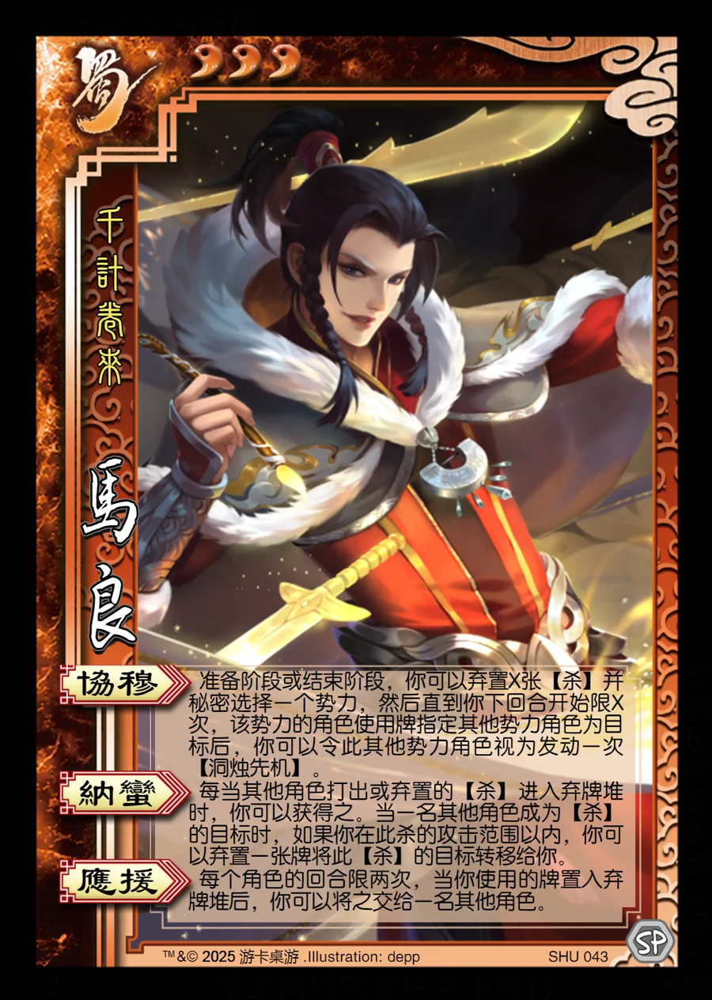

点击卡面查看大图
蜀
马良
♥3千计卷来
协穆
准备阶段或结束阶段，你可以弃置X张【杀】并秘密选择一个势力，然后直到你下回合开始限X次，该势力的角色使用牌指定其他势力角色为目标后，你可以令此其他势力角色视为发动一次【洞烛先机】。
纳蛮
每当其他角色打出或弃置的【杀】进入弃牌堆时，你可以获得之。当一名其他角色成为【杀】的目标时，如果你在此杀的攻击范围以内，你可以弃置一张牌将此【杀】的目标转移给你。
应援
每个角色的回合限两次，当你使用的牌置入弃牌堆后，你可以将之交给一名其他角色。